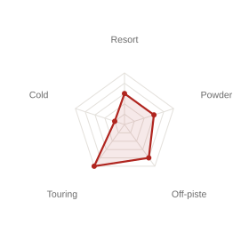

¥97,900 (tax included) — final total confirmed at checkout
Paying in another currency? Rates vary by country and change daily — search "JPY to [your currency]" online for today's rate.
Fit chart

Built for ski touring rather than the lift line, the Nallo Touring GTX is the lightest jacket in this lineup at just 407g. An angled front zip keeps a midlayer pocket reachable even with a pack on, and it's the first snow jacket from Haglöfs to include Twiceme® safety technology, which shares medical and location information in an emergency via NFC.
| Face fabric | 100% recycled polyamide, 30 denier, 3-layer GORE-TEX ripstop (denier = fabric thickness; higher = tougher, more durable) |
|---|---|
| Lining | 100% polyamide |
| Pocket mesh | 95% polyamide, 5% polyurethane |
| Waterproofness | 28,000mm |
| Breathability (RET) | 13 — lower RET = more breathable; this is a highly breathable, touring-friendly level |
| Weight | 407g (men's size L) |
Swipe left to see all columns →
| Size | Chest | Hem width | Waist | Body length | Sleeve length |
|---|---|---|---|---|---|
| S | 118.0 | 112.0 | 112.0 | 77.5 | 83.5 |
| M | 124.0 | 118.0 | 118.0 | 78.5 | 85.0 |
| L | 130.0 | 124.0 | 124.0 | 79.5 | 86.5 |
| XL | 136.0 | 130.0 | 130.0 | 80.5 | 88.5 |
All measurements in cm, garment laid flat. Multiply by 0.39 for an approximate inch value.
Colors
Sizes
Sizes shown above run S–XL. Some items and colors may also be available in other sizes (e.g. XXL) depending on style — please ask staff to confirm what's currently in stock.